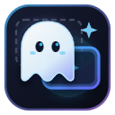

GhostPiP 시작하기
화면을 가리지 않는 투명 · 클릭 통과 · 자동 회피 PiP
1. 영상 위에 마우스를 올리세요
유튜브 · 치지직 · SOOP · 트위치와 넷플릭스 · 디즈니+ · 프라임 비디오 · 쿠팡플레이 · 티빙 · 웨이브 · 왓챠 같은 OTT 영상 위 상단에 두 버튼이 나타납니다.
웹 모드
브라우저 탭 안에서 떠 있는 창. 다른 탭으로 옮겨도 따라옵니다. 설치 필요 없음.
전체 모드
게임 · 다른 프로그램 위에도 떠 있는 창. 투명도 · 클릭 통과 · 자동 회피는 GhostPiP Engine이 필요합니다.
2. GhostPiP Engine 설치 (전체 모드용, Windows)
- 배포 파일
GhostPiP-Full-Package.zip(또는GhostPiP-Engine-win-x64.zip)의 압축을 풉니다. engine\install.bat을 더블클릭합니다. 관리자 권한은 필요 없습니다.- 이 페이지 오른쪽 위 상태가 엔진 연결됨으로 바뀌면 끝입니다.
엔진은 %LOCALAPPDATA%\Programs\GhostPiP에 설치되며 크롬이 전체 모드를 열 때만 실행되고, 확장에서 GhostPiP를 끄면 함께 종료됩니다. 제거는 uninstall.bat.
백신이 엔진을 막을 때
엔진은 다른 창 위에 투명 창을 띄우고 마우스 입력을 전달하는 프로그램이라, 코드 서명이 없는 빌드는 일부 백신(예: Avast Win64:Evo-gen)이 오탐할 수 있습니다. 네트워크 통신이나 파일 수집은 하지 않습니다.
- 백신의 격리함(검역소)에서
GhostPiP.Engine.exe를 복원합니다. %LOCALAPPDATA%\Programs\GhostPiP폴더를 백신 예외에 추가합니다.install.bat을 다시 실행합니다.
조작법
| 이동 · 크기 조절 | Ctrl+Alt를 누른 채 드래그 / 가장자리 드래그 |
|---|---|
| 투명도 | Ctrl+Alt + 마우스 휠 |
| 클릭 통과 켜기/끄기 | Alt+G |
| 자동 회피 켜기/끄기 | Alt+Shift+D |
| 음소거 | Alt+M |
단축키와 보조 키는 툴바의 GhostPiP 아이콘 → 단축키 및 조작에서 바꿀 수 있습니다.